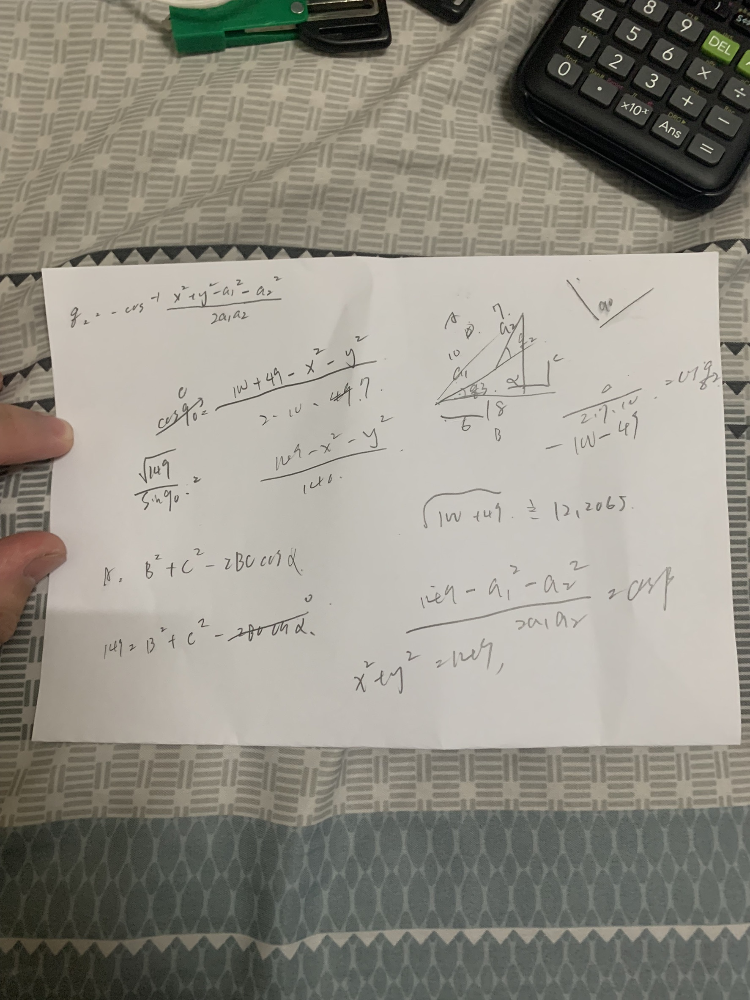
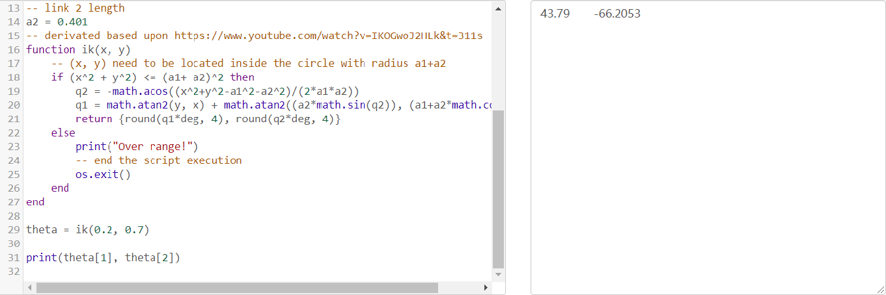

手臂末端加入 components-gripper-suction pad 吸盤 <<
Previous Next >> Python remote API 逆向運動學函式
逆向運動學
w16-4
function move(j1,j2,j3,enable)
--三軸與吸盤
modelBase=sim.getObjectAssociatedWithScript(sim.handle_self)
--與腳本關聯的對象的句柄，如果腳本未關聯值為-1
modelName=sim.getObjectName(modelBase)
--modename=modelbase
jointHandle={}
--建立空列表
j={j1*math.pi/180,j2*math.pi/180,j3*math.pi/180}
--三個軸
for i=1,3,1 do
--for 迴圈1到3
jointHandle[i]=sim.getObjectHandle('MTB_axis'..i)
--讀取每個軸的名稱放入jointhandle列表
sim.wait(1)
end
for i=1,3,1 do
sim.setJointPosition(jointHandle[i],j[i])
--設定jointhandle列表中的每根軸的徑度
sim.wait(1)
end
if enable then
--定義吸盤驅動變數,若為true執行下方程式,若為false則執行else下方程式。
sim.setIntegerSignal(modelName .."activity",1)
--設定訊號為1，為吸
else
sim.setIntegerSignal(modelName .."activity",0)
--設定為訊號0，為不吸
end
end
function sysCall_threadmain()
move(0,0,0,true)
move(0,0,-0.9,true)
move(0,0,0,0,true)
move(43.79,-66.2053,0,false)
move(0,0,0,false)
move(43.79,-66.2053,0,false)
move(43.79,-66.2053,-0.9,true)
move(43.79,-66.2053,0,true)
move(-158.2529,-87.7894,0,false)
move(0,0,0,0,false)
move(-158.2529,-87.7894,0,false)
move(-158.2529,-87.7894,-0.9,true)
move(-158.2529,-87.7894,0,true)
move(0,0,0,false)
end

-- The decimal point of number x is rounded to the nth place
function round(x, n)
n = math.pow(10, n or 0)
x = x * n
if x >= 0 then x = math.floor(x + 0.5) else x = math.ceil(x - 0.5) end
return x / n
end
-- radian to degree
deg = 180/math.pi
-- link 1 length
a1 = 0.467
-- link 2 length
a2 = 0.401
-- derivated based upon https://www.youtube.com/watch?v=IKOGwoJ2HLk&t=311s
function ik(x, y)
-- (x, y) need to be located inside the circle with radius a1+a2
if (x^2 + y^2) <= (a1+ a2)^2 then
q2 = -math.acos((x^2+y^2-a1^2-a2^2)/(2*a1*a2))
q1 = math.atan2(y, x) + math.atan2((a2*math.sin(q2)), (a1+a2*math.cos(q2)))
return {round(q1*deg, 4), round(q2*deg, 4)}
else
print("Over range!")
-- end the script execution
os.exit()
end
end
theta = ik(0.2, 0.7)
print(theta[1], theta[2])

手臂末端加入 components-gripper-suction pad 吸盤 <<
Previous Next >> Python remote API 逆向運動學函式